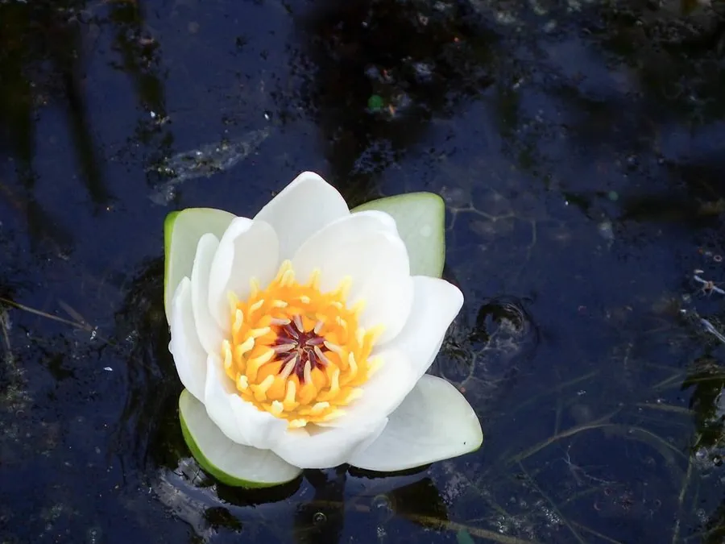

水生植物 · 植物界
睡莲 Nymphaea tetragona

睡莲科多年生浮叶水生草本，花白天开放、傍晚闭合，色彩柔美，是园林水景中最常见的水生花卉之一。
- 分类
- 门被子植物门纲木兰纲目睡莲目科睡莲科属睡莲属
- 栖息环境
- 池塘、湖泊浅水区与静水沟渠，喜温暖、阳光充足
- 地理分布
- 原产北半球温带，中国各地栽培，日本、俄罗斯等地也有分布
- 保护级别
- 暂无评估
物种志
睡莲为睡莲科睡莲属多年生浮叶水生草本，根状茎粗短，生于水底泥中。叶片浮于水面，心形或卵圆形，基部有深弯缺，表面深绿色有光泽，背面常带紫色。花单生，浮于水面或稍高出水面，直径 5–10 厘米，有白、粉、黄等色，花瓣多数，花期 6–8 月，果期 8–10 月，浆果球形。
睡莲原产北半球温带地区，中国、日本、俄罗斯等地都有分布，生于池塘、湖泊的浅水中，喜阳光充足、温暖静水，耐寒性较强。它的花多在白天开放、傍晚闭合，次日再开，连续数日，因此得名“睡莲”。睡莲与荷花常被混淆，区别在于睡莲叶片多浮于水面、有深裂缺，荷花叶片挺出水面、完整无缺。睡莲品种繁多，是园林水景和切花的重要材料，法国画家莫奈的《睡莲》系列更使它闻名世界。
形态与习性
- 株高浮叶直径 10–20 厘米，花径 5–10 厘米
- 花期6–8 月，单朵花晨开暮合
- 果期8–10 月，浆果球形
- 光照极喜光，光照不足开花少
- 水分适宜水深 30–80 厘米，静水为宜
- 土壤富含腐殖质的塘泥
- 繁殖根状茎分株为主
趣味知识
- 睡莲的花白天开放、傍晚闭合，可连续数日，因此得名。
- 睡莲与荷花的关键区别：睡莲叶片浮水、基部有深缺刻，荷花叶片挺水、完整无缺。
- 法国印象派画家莫奈以睡莲为主题创作了数十幅作品，使睡莲成为著名的艺术意象。
- 睡莲的根状茎横生于水底泥中，叶片靠长长的叶柄浮到水面。